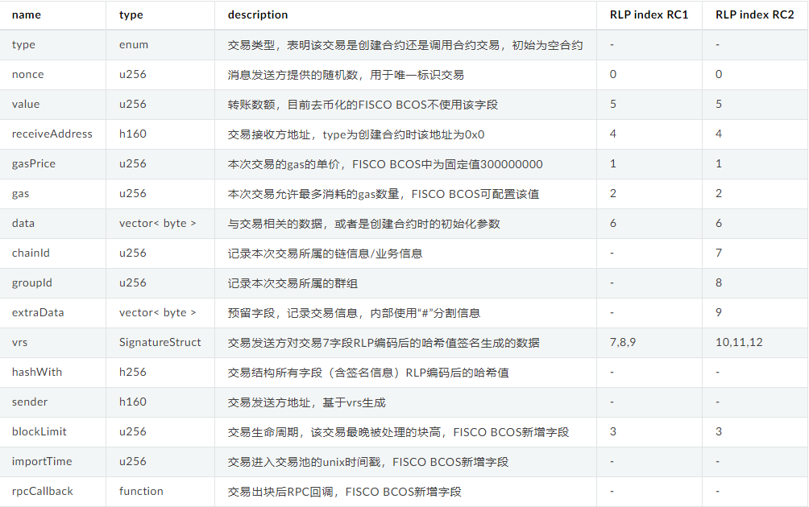
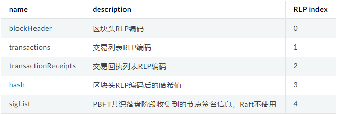
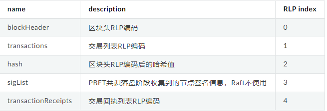
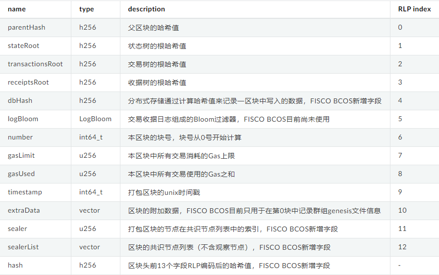
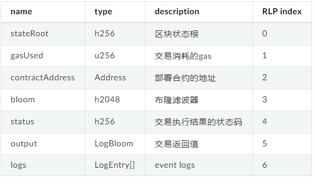
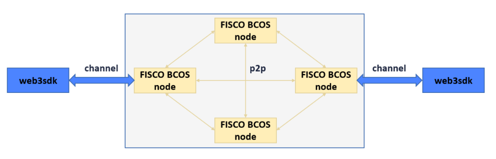
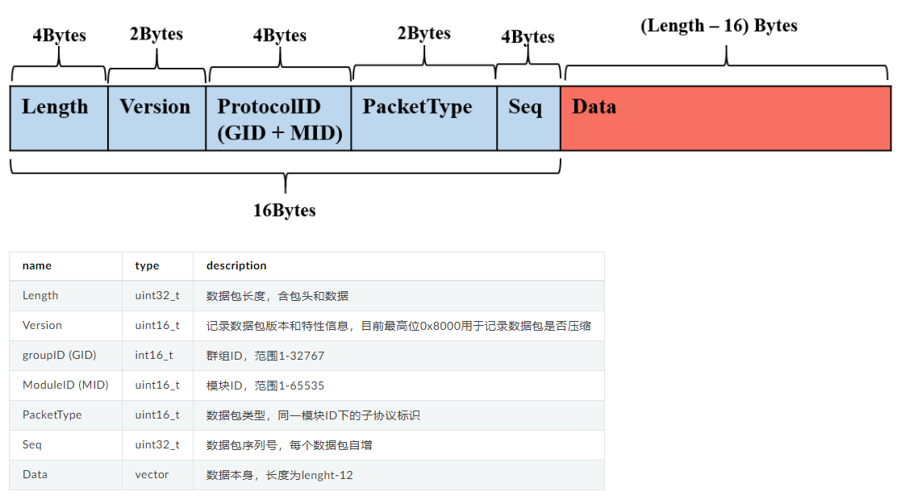
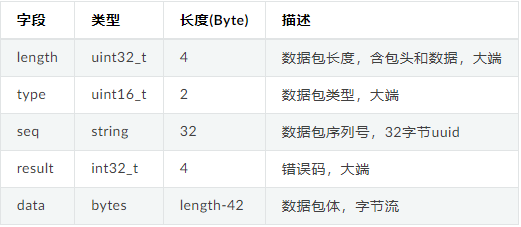
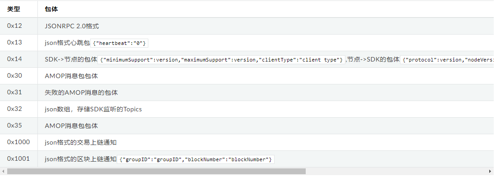
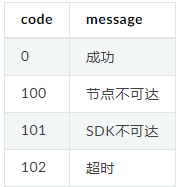

FISCO-7-数据结构与编码协议
数据结构与编码协议
1 交易结构及其RLP编码概述
FISCO BCOS的交易结构在原以太坊的交易结构的基础上，有所增减字段。

hashWith字段: 交易结构所有字段（含签名信息）RLP编码后的哈希值
RC2的生成流程也类似，只是在第一步rlp+hash的transaction结构体中增加chainId、groupId和extraData三个字段。
2 区块结构及其RLP编码描述
FISCO BCOS的区块由以下五部分组成
RC1 版本

rc2,rc3,2.0及以上版本

FISCO BCOS的区块头中每个字段意义如下：

3 交易收据

4 网络传输协议
FISCO BCOS 目前有两类数据包格式，节点与节点间通信的数据包为P2PMessage格式，节点与SDK间通信的数据包为ChannelMessage格式。

P2PMessage

补充:
- P2PMessage不限制包大小，由上层调用模块(共识/同步/AMOP等)进行包大小管理；
- 群组ID和模块ID可唯一标识协议ID（protocolID），三者关系为protocolID = (groupID << sizeof(groupID)*8) | ModuleID；
- 数据包通过protocolID所在的16位二进制数值来区分请求包和响应包，大于0为请求包，小于0为相应包。
- 目前AMOP使用的packetType有SendTopicSeq = 1，RequestTopics = 2，SendTopics = 3。
ChannelMessage

AMOP消息包
AMOP消息包继承ChannelMessage包结构，在data字段添加了自定义内容。包括0x30,0x31,0x35,0x1001
消息包类型
数据包类型枚举值及其对应的含义如下：

错误码

本博客所有文章除特别声明外，均采用 CC BY-SA 4.0 协议 ，转载请注明出处！